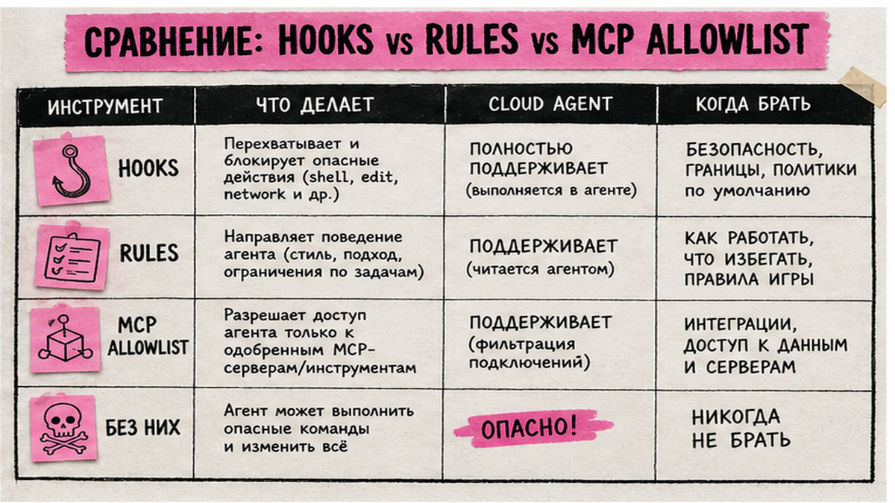
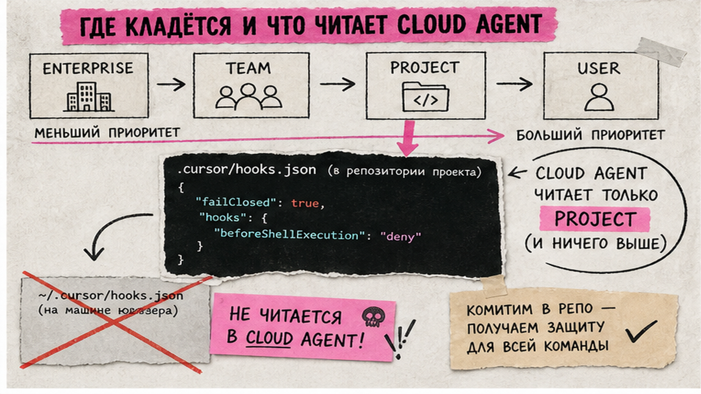
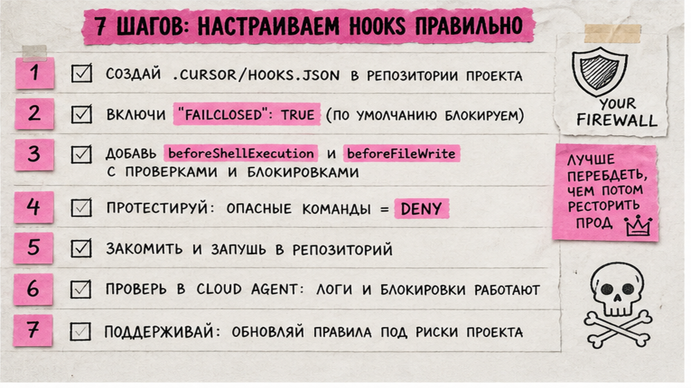

Cloud Agent в Cursor может выполнить shell-команды и править репозиторий без вашего участия. Без guardrails один промпт превращается в риск: force-push в main, rm -rf, npm publish. Cursor Hooks – это скрипты-"таможня" перед действиями агента: вы кладёте hooks.json в git, блокируете опасные команды через deny, включаете failClosed при сбоях и пишете audit-log. За 30–45 минут соберёте repo-first governance, который подхватят локальный Agent и Cloud Agent в VM.
TL;DR / Быстрый инсайт: Hooks – .cursor/hooks.json плюс shell-скрипты на событиях agent loop. Блок shell: beforeShellExecution + permission deny + failClosed: true. Cloud Agents читают только project hooks; beforeMCPExecution в cloud не работает – MCP через allowlist и postToolUse audit (гайд MCP). permission allow и ask ненадёжны – governance только через deny.
Hooks – исполняемый код: Cursor шлёт JSON в stdin, скрипт отвечает JSON или exit 2. Policy as code в git – правила у команды и Cloud Agents. Hooks дополняют MCP allowlist жёстким deny на shell и audit trail.

| Инструмент | Что делает | Cloud Agent | Когда брать |
|---|---|---|---|
| Cursor Rules | Инструкции в prompt | Да | Стиль, контекст проекта |
| Hooks | Скрипт deny/log | Да (project) | Блок shell, audit, subagent guard |
| MCP allowlist | Разрешённые MCP-tools | Да | Ограничить GitHub, CMS и др. |
| permissions.json | IDE auto-run | Нет | Личный Desktop, не team policy |
Rules (.cursor/rules) говорят модели "не трогай prod", но не останавливают команду. Hooks останавливают. permissions.json в ~/.cursor/ – списки auto-run на вашем ПК, отдельный слой от hook scripts.
Делайте: Rules + hooks + MCP allowlist в связке. Не делайте: заменять beforeShellExecution Rule-текстом "не удаляй файлы".

Проектный конфиг: .cursor/hooks.json в корне репозитория. Пользовательский: ~/.cursor/hooks.json – только локальный Desktop. Приоритет источников (сверху вниз): Enterprise → Team → Project → User. Пути к скриптам в project hooks – от корня repo, например .cursor/hooks/block-dangerous.sh, не ./hooks/script.sh без префикса .cursor/.
Cloud Agent не видит ~/.cursor/ – user hooks бесполезны. Project hooks требуют trusted workspace.
Делайте: коммитьте hooks в git. Не делайте: governance только в home-каталоге.

Workflow: mkdir .cursor/hooks → hooks.json → block-dangerous.sh → chmod +x → Hooks output → audit → commit → Cloud run
Пример hooks.json:
{ "version": 1, "hooks": { "beforeShellExecution": [{ "command": ".cursor/hooks/block-dangerous.sh", "matcher": "rm\\s+-rf|git\\s+push\\s+--force|npm\\s+publish", "timeout": 30, "failClosed": true }], "afterShellExecution": [{ "command": ".cursor/hooks/audit-shell.sh" }] } }
Сбой hook по умолчанию – fail-open. failClosed: true блокирует при crash или timeout – рекомендация docs для security hooks.
Делайте: failClosed: true на каждом beforeShellExecution в prod-repo. Не делайте: оставлять fail-open там, где пропуск rm -rf недопустим.
Permission decision (allow/deny/ask) возвращают только beforeShellExecution и beforeMCPExecution – последний только в Desktop. Для governance надёжен deny и exit code 2. Значение allow не снимает ручное подтверждение MCP в IDE; ask по отчётам community часто игнорируется.
block-dangerous.sh:
#!/usr/bin/env bash
input=$(cat)
echo '{"permission":"deny","user_message":"Команда заблокирована hooks."}'
exit 2
Matcher – regex по полной команде: git\\s+push\\s+--force, curl\\s+.*\\|\\s*bash. Делайте: понятный user_message. Не делайте: auto-approve через allow – надёжен только deny.
Hook получает command, output, duration (ms). audit-shell.sh:
audit-shell.sh:
#!/usr/bin/env bash
input=$(cat)
echo "$input" >> .cursor/hooks/audit.log
Hook afterShellExecution получает command, output и duration (ms). Добавьте audit.log в .gitignore. В cloud beforeMCPExecution недоступен – audit MCP через postToolUse matcher MCP:, блок – allowlist (гайд MCP).
Делайте: audit без секретов в git. Не делайте: логировать токены из output.
beforeMCPExecution в Cloud Agent не поддерживается. Локально:
beforeMCPExecution (только Desktop):
"beforeMCPExecution": [{ "command": ".cursor/hooks/block-mcp.sh", "matcher": "production-db", "failClosed": true }]
| Задача | Desktop | Cloud Agent |
|---|---|---|
| Блок shell | beforeShellExecution + deny | то же + failClosed |
| Блок MCP | beforeMCPExecution + deny | MCP allowlist, минимум серверов |
| Audit MCP | afterMCPExecution | postToolUse MCP: |
| Subagents | subagentStart | subagentStart |
В cloud не работают beforeMCPExecution, afterMCPExecution, sessionStart. beforeShellExecution и subagentStart работают. Hooks стартуют после writable environment, не в read-only фазе.
Делайте: cloud MCP через allowlist + postToolUse. Не делайте: копировать beforeMCPExecution в cloud runbook.
Cloud Agent подхватывает project hooks из repo. Subagents:
subagentStart:
"subagentStart": [{ "command": ".cursor/hooks/log-subagent.sh", "matcher": "generalPurpose|shell" }]
Enterprise – team hooks в dashboard Cursor. Цепочка для автоматизатора: hooks в repo, MCP allowlist, Make по расписанию – курс Make.com и вайбкодинг.
Делайте: тест Cloud run после merge. Не делайте: ждать sessionStart в cloud.
Cursor следит за hooks.json и перезагружает при save; при проблемах – restart Cursor. Отладка: Customize → Hooks (статус loaded) и Output channel Hooks (ошибки JSON, path, timeout).
Делайте: отлаживать по одному hook за итерацию. Не делайте: включать десять matcher одновременно – не найдёте сломанный regex.
Расширьте matcher под ваш стек: docker push, terraform destroy, curl pipe в bash. Настройте MCP allowlist по инструкции MCP в Cursor. Добавьте subagentStart, если используете Task subagents. No-code автоматизация после guardrails – обучение Make.com.
Материал проверен: эксперт Артур Хорошев (CEO Maya AI).
Достоверность: факты сверены с cursor.com/docs/hooks и cloud-agent docs на 26.08.2026. Wordstat по "как настроить cursor hooks" не получен (MCP недоступен) – уточняйте вручную.
JSON .cursor/hooks.json и shell-скрипты на событиях agent loop (shell, файлы, subagents). Старт: каталог .cursor/hooks/, version 1, один beforeShellExecution.
Rules – инструкции модели в prompt. Hooks – код: deny блокирует команду, afterShellExecution пишет audit. Для rm -rf нужен hook.
beforeShellExecution, matcher с regex, stdout {"permission":"deny"} или exit 2, failClosed: true. Тест: попросите Agent опасную команду из matcher.
Да – закоммитьте project hooks. User hooks из ~/.cursor/ в cloud VM недоступны; без git-policy cloud run без guardrails.
Нет (официальная cloud-матрица). Cloud: MCP allowlist + postToolUse. beforeMCPExecution – только локальный Desktop.
Проверьте Customize → Hooks, Output → Hooks, chmod +x, trusted workspace, валидный JSON. Restart Cursor после правки hooks.json.
hooks – policy-скрипты в .cursor/hooks.json (git). permissions.json – IDE auto-run на ПК. Team governance – hooks в repo.